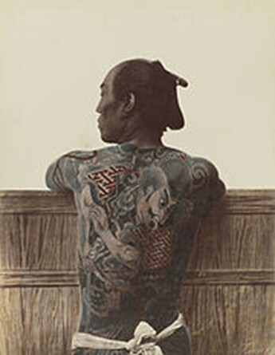
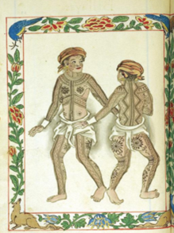
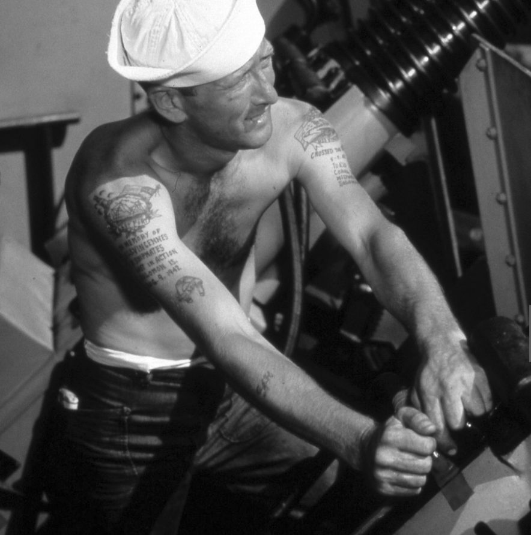

Modern History
From socially unacceptable, associated with criminals and sailors to finally accepted and an everyday encounter. The jurney from 10th century until 2020.
10th century to -18th century
During the 10th century it was common to see northern tribes with tattoos covering their arms all the way up to the neck. English soldiers wore tattoos for protection, the most common tattoo was the Jerusalem cross. Occasionally they could use them to identify fallen warriors
16th century was when Japanese practise of tattooing was birthed, before then only fishermen, prostitutes and manual workers to show status. But not until mid-18th century where the tattoos really speed up even though they were still forbidden. One reason was the jealousy of the kimono. Only royals were allowed to bear them, and the lower classes found a different way of decorating their bodies in form of tattoos. Since being forbidden the artists were practicing in secret.
17th century Samoan islands Dutch sailors wrote that they met people with incredible fabric strapped to their bodies, in fact this was tattoos. The way of acquiring tattoos in the Samoa islands have changed very little over 2000 years and resembles many other traditional tattoo methods. By using combs in different sizes and hammering the pigment or ink, it is very painful and takes an immense amount of time to finish. The word tattoo might have originated from the Samoan word ‘Tatau’.
18th century, people in high positions started to get tattoos. Mid-century the tattoos were more visible on both artists and some US presidents, that were showing their art publicly. Tattoo shops now started to open up all over US and UK. 1870 it became immensely popular amongst the upper class and even spread up to the royal elite. Still the middle class associated tattoos to criminals and sailors and was not very fond of the idea of getting a tattoo.
19th century common people saw the military and sailors coming home covered with exotic new tattoos from foreign lands, and the tattoo became a bit more popular. In 1929 the Duke of Montrose and Sir Ian Colquhoun revealed their tattoos on a formal dinner this was the first time a tattoo had been mentioned in an English newspaper.
[5,6,17]
1900-1940
Tattoos where not yet common amongst the population, most that possessed a tattoo was sailors and circus artists. To show their story or profession, tattooing was used as an inition rite for the young sailor and the older they got the more tattoos the had, there were specific ones showing accomplishments, that you had sailed across the equator or more than 5000 miles, while others like compasses and birds, boats were common aswell.
The very first female tattoo artist in England emerged during this timewas Jessie Knight she was active around 1920-1960, In the 20s cosmetic tattoos became popular, this was not publicly acceptable and was kept hidden. Later in history it would disappear and now reappear in modern times. Today it’s not uncomman that girls tattoo their lips, eyelids or eyebrows just as in the 20s.
another important woman to mention is Shanghai-Kate she is also called The American godmother of tattoos and has practiced tattooing for over 50 years and is still active in America today. Shanghai-Kate says that she believes getting a tattoo is in our DNA and that it is a very sensual experience where you are very intimate and trusting in the artist.
30 Fun fact of the 30s this is the decade personal social security numbers was given, everyone had to memorise their numbers and what better way than putting permanently on your body.
40 The big trends of this decade was colour in plenty and due to the war (WW2) an increases of patriotic tattoos were seen.
[5,6,17,19]
1950-1980
50 The beginning of the Tattoo Renaissance. Several great artists influenced the tattoo business and the tattoo was seen as a symbol of manliness. Still in the general public eye, people that had tattoos were seen as criminals.
60 There was a huge movement against tattoos that claimed tattoos gave people Hepatitis. There were no evidence proving this claim but still tattoo parlours all over went out of business. Skulls and skulls with crossbones became popular especially amongst bikers, and skulls are still one of the most popular tattoos today.
70 The time where tattoos finally starts to get accepted amongst the average people, sleeves and body suits started to get popular during this decade.
80 Not only was the 80s big because Rhianna, Taylor Swift, Beyoncé, Mr Frodo Baggins (Elijah wood) and other great names were born. It was also big for tattoos, well the tattoos were bigger, and finally accepted. Tattoo artists started to thrive, experimenting with more colours in their designs. The Celtic knots and roses were amongst favourite designs back then. In 1988 Arnold Rubin published a collection of works called the “Marks of civilaziation”
[5,6]
1990-2020
90 Late 80s early 90s the repetitive and premade tattoos came to fashion, influenced by Asian design. People with art degrees now started to enter the tattoo world using the body as a canvas instead of regular ones. This change combined with better pigment led to better quality tattoos. Pamela Anderson now started her journey of fame which rocketed with the series Baywatch, she and other celebrities starting to get inked, this resulted in tattoos showing on media and movies and the tattoo got even more popular.
Margot Mifflin wrote in 1997 the very first book about women and tattoos "Bodies of Subversion: A Secret History of Women and Tattoo",
2000 The year that society was supposed to end but we survived!Although something did happen, the “tramp stamp” became atrend it only lasted for a few years though. Other tattoos that became poppular this year was the yin yang and butterflies and they are still popular today. Tattoo shows like L.A. ink now started to send on TV.
2010 Everyone, people from all the social classes are now getting tattoos. From lower-, middle- and upper-class families to nobles and royals, the boundaries were broken. The era of experimenting with tattoos on unusual places, design and humor began to show in the designs, like foxes behind the ear, text or pictures between fingers andtoes, even on the inside of the lips and under hair etc.
2015 Cosmetic tattoos for women started to once again get popular, people tattooed their lips, eyebrows and eyelids, and it keeps growing in popularity. The Book "Covered In Ink: Tattoos, Women, and the Politics of the Body" written by professor Beverly Yuen Thompson were published, Professor Beverly made earlier in 2009, "Covered: a documentary about women and tattoos" aswell. If you haven’t seen it yet, do it. She raises issues like what is seen female and butch tattoos and how society treats women that are "not" fitting the norm or what is socially accepted.
[5,6]
2020 Now were already in the 2020 and so far it has been total disaster for many businesses including tattooing. Still research is being made on temporary tattoos that will be able to read your vital functions or tell you to get in the shade when you have had too much sun. The tattoo is approaching a revolution and I for one is extremely excited to see where this will lead!
[19]
To read about more news click HERE and you will come to our news page.